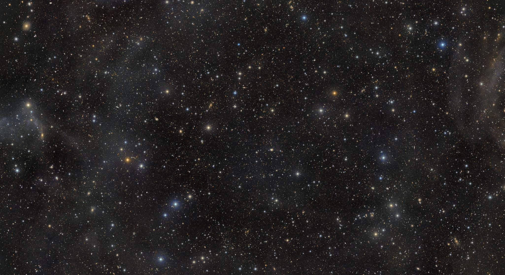

A LATAM Hack Days Workshop
Open Tools, Open Sky: Doing LSST Science with Public Rubin Data & LINCC Frameworks
Three days turning open access to Rubin's alert stream into working, broker-served science.
About
Rubin Observatory's alert stream is the largest public astronomical data product ever released. Every alert packet, and every broker classification, is available to every astronomer — regardless of data-rights status. Yet without structured onboarding and the right tool guidance, that access remains opaque for many Latin American researchers.
Over three days in Medellín, students, early-career researchers, and senior LATAM scientists — working in teams paired with Rubin mentors — will build functioning science pipelines on broker-served Rubin alerts using LINCC Frameworks tools. The event follows the sprint-driven model of the Rubin Alerts & AI Hackathon: short context talks, pre-formed teams, daily stand-ups, and hack sprints punctuated by rapid team updates and a final show-and-tell.
Onboard a new LATAM cohort
Bring researchers to Rubin's public products (alert packets, brokers) and to LINCC Frameworks — LSDB/HATS, Hyrax, LightCurveLynx — with particular attention to those without individual LSST data rights.
Pair every team with a mentor
Each team is paired with a Rubin mentor committed to structured post-event follow-up — ensuring continuity into peer-reviewed publications and long-term collaborations.
Give back to the community
We will coordinate with Rubin's Community Science Team to include the lessons learned in documentation that will benefit the whole Rubin community.
Science Topics
Science topics are proposed by the mentors, and teams are assembled around them in advance. Every team uses at least one LINCC Frameworks tool and at least one community broker. Broad categories, drawn from the projects already proposed, include:
Transients & supernovae
Detecting and characterizing alert-stream transients, including Type Ia supernovae and their host galaxies.
Variable stars & the distance scale
Period-finding and population studies of broker-served variable stars, and distance determination across the nearby Universe.
AGN & alert classification
Characterizing AGN, transients and variable stars in the Rubin alert stream using community brokers such as ALeRCE.
Solar System
Exploring Rubin's Solar System discoveries and connecting them to the Minor Planet Center.
Anomaly detection
Discovering the unexpected — mining the alert stream for rare and anomalous events.

The COSMOS field imaged by Vera C. Rubin Observatory.
Mentors & Projects
Rubin mentors lead pre-formed teams around the projects below. Each team pairs a mentor-proposed science question with hands-on Rubin alert data and LINCC Frameworks tools. Confirmed mentors, in alphabetical order by last name:
Pedro Bernardinelli ↗ Mentor
- Exploring Rubin Solar System discoveries in the Minor Planet Center.
Team repository: bernardinelli/medellin_workshop_solarsystem ↗
Bolivia Cuevas-Otahola ↗ Mentor
- Mapping the Nearby Universe: distance determination with variable stars in the Rubin alert stream.
- Discovering the Unexpected: anomaly detection in Rubin alert streams. Co-mentored with Tatiana Acero-Cuellar ↗
Team repositories:
taceroc/LATAM_Hackathon_AnomalyDetection_2026 ↗
umbramortem/open_tools_open_sky_LSST_2026 ↗
Yijung Kang ↗ Mentor
- Matching host galaxies of SNe Ia using LSST alerts and archival catalog data.
Team repository: ykangastro/Team3_SNe_Host_Matching ↗
Alejandra Muñoz Arancibia ↗ Mentor
- Characterizing transients, AGN and variable stars in Rubin alerts using the ALeRCE broker.
Team repository: ale-munozarancibia/LSST_Hackdays_Medellin_Team1_Characterizing_DIAObjects ↗
Rubin Data & LINCC Tools
The workshop is hands-on. A short set of plenary talks on Day 1 sets the context — the Rubin ecosystem, a broker crash course, and an Alert Production orientation — and everything else is building. Public datasets beyond Rubin (e.g. Gaia, Roman) broaden the science reach without requiring proprietary access; the LSDB/HATS formats are designed for efficient cross-matching.
- LSDB / HATS — scalable catalog cross-matching in the HATS format.
- Hyrax — machine-learning and anomaly-detection workflows on alerts.
- LightCurveLynx — light-curve modeling and analysis.
- Community brokers — e.g. ALeRCE; no data rights required to join.
- Rubin alert packets — the public alert stream, open to every astronomer.
- Companion surveys — Gaia, ZTF, ATLAS, Roman for cross-matching.
Pre-event (T–2 weeks): a ~2-hour self-paced tutorial covering LSDB/HATS, Hyrax and LightCurveLynx, plus a short kickoff Zoom with each team's mentor to set the science question and divide initial tasks.
Draft Agenda
Three full days in Medellín — context and a first sprint on Day 1, deep sprints on Day 2, and a final sprint with show-and-tell on Day 3.
Day 1 — Oct. 13
Context + Sprint 1
Day 2 — Oct. 14
Deep Sprints
Day 3 — Oct. 15
Sprint + Show-and-Tell
Draft schedule — subject to change.
Resources
A curated starting point for participants — Rubin's public data and documentation, the community alert brokers, the LINCC Frameworks tools with their tutorials, the LSST Science Collaborations you can join (several without data rights), and a glossary of key terms. We encourage you to explore these before the workshop.
Rubin & LSST — official pages
The Vera C. Rubin Observatory conducts the Legacy Survey of Space and Time (LSST). Start here for the observatory, its public data products, and documentation.
- Rubin Observatory ↗ — main site: mission, news, and how Rubin works.
- Data products ↗ — overview of Prompt products (alerts), Data Release products, and access.
- Alerts & brokers ↗ — the public alert stream and the community brokers that serve it.
- How alerts work ↗ — what a Rubin alert is and how the stream is produced.
- Resources for scientists ↗ — tutorials, the Rubin Science Platform, and community support.
- Documentation & publications ↗ — technical notes and Rubin/LSST papers.
Alert brokers
Brokers ingest Rubin's full public alert stream, add value (cross-matches, features, machine-learning classifications), and let you filter and retrieve events for your science. No LSST data rights are required to use them. A great overview and side-by-side comparison lives in the community Broker Wiki:
- Rubin Broker Wiki ↗ — how to choose a broker for your science case, with a feature comparison across brokers.
- ALeRCE ↗ — dynamic catalog and broker with cross-matched, annotated, machine-learning-classified light curves.
- ANTARES ↗ — NOIRLab real-time broker adding context from multiwavelength catalogs and event history.
- AMPEL ↗ — modular platform for real-time and offline alert processing with explicit provenance tracking.
- Babamul ↗ — lightweight, open-source broker that restructures the stream into smaller science-ready channels.
- Fink ↗ — community broker with catalog/stream cross-matches, feature engineering, and machine-learning enrichment.
- Lasair ↗ — UK broker built around real-time SQL filters, light-curve features, and intelligent cross-match.
- Pitt-Google ↗ — cloud-based broker and data-distribution service for scalable public access to LSST alerts.
Downstream brokers — such as POI (variable-star light curves) and SNAPS (Solar System) — build on the streams above; see the Broker Wiki for the full list of nine.
LINCC Frameworks tools
LINCC Frameworks (an LSST Discovery Alliance program) builds open-source tools for analysis at LSST scale. Below are the tools we will use, each with documentation, tutorials, and its LSST-DA Slack channel. See the full areas of focus ↗ and the overview tech talk ↗.
LSDB / HATS
Scalable spatial analysis. HATS (Hierarchical Adaptive Tiling Scheme) is a Parquet-based catalog format with dynamic spatial partitioning; LSDB is a Dask-based, pandas-like framework for parallel, distributed analysis and cross-matching over large catalogs. A HATS version of Rubin DP2 is available at data.lsdb.io.
LSDB docs ↗ HATS docs ↗ Rubin tutorials ↗ Datasets ↗ Slack: #lincc-frameworks-lsdb
Hyrax
A low-code framework for training and analyzing machine-learning models reproducibly — cutout acquisition, data loading, hyperparameter tuning, model logging, inference, similarity search, and anomaly detection, scaling from laptop to cloud.
Docs ↗ GitHub ↗ Intro talk (video) ↗ Slack: #lincc-frameworks-hyrax
LightCurveLynx
Flexible, scalable time-domain simulation software with realistic effects and survey strategies, wrapping many existing simulation packages — e.g. to model an expected population (such as Type Ia supernovae) and study selection biases against Rubin data.
Docs ↗ Tutorials ↗ Rubin DP2 tutorial ↗ GitHub ↗ Intro talk (video) ↗ Slack: #lincc-frameworks-lightcurvelynx
RAIL (photo-z, with DESC)
Redshift Assessment Infrastructure Layers — a modular toolkit for Rubin-wide photometric-redshift pipelines: creation of mock photometry, estimation by many algorithms under a shared API, and evaluation of performance metrics.
Also in the LINCC Frameworks ecosystem: nested-pandas (scalable time-series tables), KBMOD (moving-object / Solar System detection), and the Python Project Template ↗ for reproducible packages. General help on Slack: #lincc-frameworks-qa · #lincc-tech-talks · #lincc-frameworks-dev
LSST Science Collaborations
The LSST Discovery Alliance (LSST-DA) ↗ supports the eight LSST Science Collaborations ↗ — communities organized around science themes. Crucially, several are open to join without LSST data rights.
- AGN ↗ No data rights — Active Galactic Nuclei.
- TVS ↗ No data rights — Transients & Variable Stars.
- SMWLV ↗ No data rights — Stars, Milky Way & Local Volume; open to everyone.
- ISSC ↗ No data rights — Informatics & Statistics.
- Galaxies ↗ — galaxy formation and evolution.
- SSSC ↗ — Solar System.
- SLSC ↗ — Strong Lensing.
- DESC ↗ — Dark Energy.
Rubin Data Policy (RDO-013)
RDO-013, the Rubin Observatory Data Policy, sets the rules for who may access LSST data, what may be shared, and how results may be published during commissioning and operations. The copy below is version 1.2.5, revised 5 November 2025; the DocuShare link always points at the current version.
PDF, version 1.2.5 ↗ Current version on DocuShare ↗
Who has data rights
- United States. All US scientists: anyone employed by, funded at, or enrolled at a US educational or research institution carrying out non-profit research, or developing EPO (Education and Public Outreach) citizen-science projects.
- Chile. Scientists with access to Chilean telescope time as defined by SOCHIAS (Sociedad Chilena de Astronomía), together with their associates and students.
- International. Rights come through Data Rights Agreements (DRAs) with the DOE, SLAC or AURA, in exchange for in-kind contributions. A DRA names individual Principal Investigators, each typically with up to four junior associates. Only the NSF and the DOE can confer data rights.
- Builders. LSST Builders and Science Community Builders, each requiring two FTE-years of contribution, hold rights regardless of location, and that status does not expire.
- Petition. Amateur astronomers and citizen-science leaders may petition the Data Policy Committee.
Users can never grant rights to other people by sharing data.
Grace period
Junior users — students, postdocs and junior faculty — who leave a US or Chilean institution keep their rights for two years. During that time they may access only the data that existed when they left, and they must relocate to an eligible institution. International grace periods are set in each Data Rights Agreement.
What is public and what is proprietary
The core rule is a two-year proprietary period after each Data Release, after which the data become public.
Public immediately:
- The alert stream, including cutouts
- The contents of the alert archive
- Prompt catalog products in the PPDB (Prompt Products Database)
- Data reported to the Minor Planet Center
- The software stack
- Survey simulations and MAF (Metrics Analysis Framework) outputs
- EPO data
- A subset of site metadata, such as weather, seeing and observing patterns
Proprietary:
- Raw and calibration data
- Prompt image products, which stay proprietary until two years after inclusion in a Data Release — up to about three years in total
- Data Release images and catalogs, including photometric redshifts
- Most EFD (Engineering and Facility Database) metadata
- Commissioning data, which follows operations rules
A clause added in this version, DPOL-520, states that Butler registry metadata — the existence of a dataset and its dimension records — is not proprietary. An IDAC (Independent Data Access Center) may therefore list Data Release products in public ObsTAP or SIA services, as long as the data themselves stay restricted.
Note that public does not mean Rubin will serve the data to everyone: access to the DAC (Data Access Center) and the RSP (Rubin Science Platform) stays limited to authenticated LSST users, even for public products.
Derived data products and target lists
A derived data product is anything made from proprietary data that cannot be used to recreate a proprietary product, including an equivalent reconstruction of one. Colour–magnitude diagrams, mass maps, physical properties and classifications are examples. These may be shared with anyone.
Users may also share target lists of up to 1,000 objects — right ascension, declination and ugrizy magnitudes — with non-users, for specific proposals or publications. Larger lists, for example for multi-object spectroscopy, need approval from the Data Policy Committee. Large survey-to-survey data-sharing arrangements go through the committee and additionally need approval from the Operations Director, the Management Board and the agencies.
Publications
There is no reserved science: no Science Collaboration owns a research area. Rubin requires no publication-board approval, although individual collaborations may have their own. Non-users may be co-authors without accessing the data.
Reproducibility should come from citing queries, not from posting proprietary data. Papers should include an acknowledgment of data-policy compliance and of NSF/DOE funding. Nobody may publish on unreleased data, and members of the commissioning team cannot submit papers until the data are released to users.
Worked examples (Section 8)
- Sharing a comet’s ephemerides is allowed.
- Stacks you build yourself from Prompt images are proprietary, because they are equivalent to Data Release stacks.
- Star catalogs of a newly discovered galaxy are proprietary, but plots and derived galaxy properties are not.
- Broker classifications are shareable.
- Brokers may republish the full alert database.
- A user may contribute precursor photometry to a non-user’s paper as a derived product, and be a co-author.
Enforcement and committees
Rubin does not actively monitor users: each user is personally responsible, and suspected violations go to the Data Policy Committee. Sanctions range from losing access for at least one data release to having rights revoked entirely. A program in good standing may request a replacement for a revoked international Principal Investigator or junior associate.
The Data Policy Committee interprets the policy, arbitrates disputes and evolves it. The Resource Allocation Committee works like a time allocation committee, but for compute, storage and bulk downloads beyond the default quotas.
Glossary of key terms
A quick reference to terms you will hear during the workshop. For the complete, official list, see the Rubin/LSST Glossary & Acronyms ↗ (searchable, English & Spanish) and the simpler education glossary ↗.
- Vera C. Rubin Observatory
- A new observatory on Cerro Pachón in Chile, funded by the U.S. National Science Foundation (NSF) and the U.S. Department of Energy (DOE). Its 8.4-metre Simonyi Survey Telescope carries the 3.2-gigapixel LSST Camera, the largest digital camera ever built for astronomy, and photographs the whole southern sky every few nights. rubinobservatory.org ↗
- LSST — Legacy Survey of Space and Time
- Rubin’s flagship ten-year survey. Instead of pointing at one target at a time, it scans the same sky over and over; comparing images from different nights is what reveals everything that moves or changes brightness. About the LSST ↗
- LSST-DA — LSST Discovery Alliance
- The non-profit that builds and supports the LSST science community: it hosts the Science Collaborations, runs LINCC Frameworks, awards fellowships and grants, and operates the community Slack workspace where much day-to-day discussion happens. lsstdiscoveryalliance.org ↗
- LINCC Frameworks — LSST Interdisciplinary Network for Collaboration and Computing
- A software program of LSST-DA that builds free, open-source Python tools for analysing data at LSST scale, including LSDB/HATS, Hyrax ↗, LightCurveLynx ↗, RAIL ↗ and KBMOD ↗. Focus areas ↗
- Data rights
- Formal permission to use Rubin’s proprietary (not yet public) data products during the survey — the deep coadded images and the annual catalogues. Held by researchers in the United States and Chile and by institutions that made in-kind contributions. Rubin data rights policy ↗
- Without data rights
- Not holding that permission — which does not mean being shut out. The nightly alert stream and everything the brokers build on top of it are public worldwide, and this workshop is built entirely on that open material.
- Public data
- The Rubin products anyone in the world may use without special permission: above all the alert stream, the broker products derived from it, and the Data Previews. Rubin data products ↗
- Data products
- The catalogues, images and alerts Rubin generates, in two families. Prompt products are produced within about a minute of each exposure and include the alerts (public through the brokers). Data Release products are reprocessed once a year and are mostly restricted to data-rights holders. Overview ↗
- Prompt products
- Everything Rubin produces within about 60 seconds of an exposure: the calibrated image, the difference image, the catalogues of detected changes, and the alerts. The speed is the point — it lets astronomers follow up an event the same night it happens. How Rubin alerts work ↗
- Difference image (image subtraction)
- What you get when a deep reference image of a patch of sky is subtracted from a new one: the unchanging stars and galaxies cancel out, leaving only what is new, brighter, fainter or has moved. Every Rubin alert starts as a detection in a difference image. How it works ↗
- DIASource / DIAObject — Difference Image Analysis
- DIA stands for Difference Image Analysis. A DIASource is one detection in one difference image at one moment; a DIAObject groups all the DIASources found at the same position on the sky — in other words, the light curve of that changing source.
- Alert
- A short public message Rubin issues within about 60 seconds whenever it detects a change in a difference image — something new, brightening, fading or moving. It carries the new measurement plus a short history, so you can react the same night. Rubin alerts ↗
- Alert packet
- The structured record of a single alert, serialised in the Apache Avro format: sky position, photometry (brightness measurements), the recent light-curve history, and small image cutouts around the source. Alert packet schema ↗
- Alert stream
- The continuous public broadcast of alert packets — up to roughly 10 million per night, far more than any person can read. Rubin does not serve it to individuals one at a time; it sends the whole stream to the community brokers. Alerts and brokers ↗
- Community broker
- Software that ingests the full alert stream, enriches it — cross-matching against other catalogues, computing features, running machine-learning classifiers — and gives astronomers a searchable, filterable view of it. Brokers are the practical entry point to Rubin for anyone without data rights. List of brokers ↗
- ALeRCE — Automatic Learning for the Rapid Classification of Events
- A Chilean-led community broker and dynamic catalogue: it annotates and classifies alerts with machine learning and exposes them through a web interface and a Python client. science.alerce.online ↗
- Science Collaboration (SC)
- A self-organised community of researchers built around one LSST science theme — for example TVS (Transient and Variable Stars) ↗ or AGN (Active Galactic Nuclei) ↗, alongside Dark Energy (DESC), Solar System (SSSC), Galaxies, Strong Lensing, Informatics and Statistics (ISSC), and Stars, Milky Way and Local Volume (SMWLV). Several accept members without data rights. All eight collaborations ↗
- DP1 / DP2 — Data Preview 1 and 2
- Small, early Rubin data releases published before full survey operations so that the community can learn the formats and tools on real data. DP1 documentation ↗ · HATS version of DP2 for LSDB ↗
- Light curve
- The brightness of one source plotted against time. Its shape is the fingerprint: a repeating pattern means a variable star, a sharp rise followed by a slow decay means a supernova, and irregular flickering suggests an active galactic nucleus.
- Transient
- An astronomical event that appears, peaks and fades over days to months: supernovae (exploding stars), tidal disruption events (a star torn apart by a black hole), kilonovae (merging neutron stars). They are visible only while they last, which is why fast alerts matter.
- Variable star
- A star whose brightness changes repeatedly, often with a regular period — pulsating stars such as RR Lyrae and Cepheids, or eclipsing binaries. For some types the period is tied to the true luminosity, which turns them into distance markers across the Universe. TVS Science Collaboration ↗
- AGN — Active Galactic Nucleus
- The supermassive black hole at the centre of a galaxy while it is actively swallowing gas, often outshining all the stars of its host galaxy combined. Its brightness flickers irregularly, which is what makes it recognisable in the alert stream. AGN Science Collaboration ↗
- Cross-match
- Associating entries in two catalogues that refer to the same object, by comparing sky positions within a small search radius. It is how you ask “what was already known at this position?” — and it is expensive when both catalogues hold billions of rows, which is the problem LSDB and HATS exist to solve.
- HATS (Hierarchical Adaptive Tiling Scheme) / LSDB (Large Survey Database)
- HATS is a way of storing a huge catalogue: the sky is cut into tiles, with more tiles where sources are crowded, and each tile is saved as an Apache Parquet file. LSDB is the Python package — pandas-like, parallelised with Dask — that loads, filters and cross-matches HATS catalogues without loading everything into memory. HATS docs ↗ · LSDB docs ↗ · ready-made catalogues ↗
- Companion surveys — Gaia, ZTF, ATLAS
- Other sky surveys worth cross-matching against Rubin. Gaia ↗ is the European Space Agency mission measuring precise positions and distances for about two billion stars; ZTF (Zwicky Transient Facility) ↗ is the wide-field survey whose alert stream is the closest existing analogue to Rubin’s; ATLAS (Asteroid Terrestrial-impact Last Alert System) ↗ scans the whole visible sky every night or two.
- Photometric redshift (photo-z)
- Redshift measures how much a galaxy’s light has been stretched by the expansion of the Universe, and so how far away it is. A spectrum measures it precisely but is slow; a photometric redshift estimates it from brightness in a handful of filters, which is the only option for billions of galaxies. RAIL — Redshift Assessment Infrastructure Layers ↗
- MPC — Minor Planet Center
- The clearing house of the International Astronomical Union (IAU) for observations and orbits of Solar System small bodies: asteroids, comets and distant objects. Rubin’s Solar System discoveries are reported to it. minorplanetcenter.net ↗
Local Information
The workshop is hosted by Universidad de Antioquia in Medellín, Colombia — the "City of Eternal Spring," set in a green Andean valley with a mild climate year-round and an easy international gateway via José María Córdova International Airport (MDE).
The event is fully in-person. Participants should bring a laptop; a UdeA computer room with desktops will be reserved as a backup for applicants without portable hardware.
The workshop will be conducted primarily in English.
Venue: Universidad de Antioquia, Edificio de Extensión, fifth floor, Sala de Juntas. The building is not inside the main campus: it stands directly opposite the main entrance ("Portería de Ferrocarril"), at Calle 67 # 53-108, Medellín. See it on the map ↗. General information line: (+57) (604) 219 5000.
Practical details for travel, lodging and daily logistics are collected below.
Medellín, Colombia — host city for the workshop.
✈️ Arriving in Medellín
All flights arrive at José María Córdova International Airport (MDE), a small airport located about one hour from Medellín. There are two ways to reach the city:
- Bus. Buses leave from just outside the airport exit (look for the queue). The fare is about 20,000 COP and can be paid by card. The ride takes roughly 40 minutes and ends near the "Exposiciones" metro station, from where the Metro and Metroplús ↗ connect to both hotels.
- Taxi. Official taxis (white cars with a blue stripe) wait at the airport. The fare is about 100,000 COP and the ride ends in the San Diego area; from there take a second taxi, the Metro or the Metroplús to the hotel, or agree with the driver on a direct ride to the hotel for an additional charge.
If you arrive after 8:00 pm, we recommend taking a taxi or Uber from the bus drop-off point (San Diego or Exposiciones) to your hotel.
🏨 Hotels
Hotel IBIS (mentors)
Calle 20 #44-16, Medellín · (+57) (604) 590 3565 · ibis.medellin@accor.com
Near the "Industriales" metro station.
Hotel MED La Palma (students)
Calle 30 #80-3, Medellín · (+57) 300 285 5042
Near the "La Palma" Metroplús station.
🚇 Getting to UdeA from the hotels
- From Hotel IBIS: walk about 10 minutes to Estación Industriales, take the Metro towards "Niquia" and get off at Estación Universidad after roughly 12 minutes. Cross Parque de los Deseos (100 m) to reach the entrance of Edificio de Extensión.
- From Hotel MED La Palma: cross the street, take the Metroplús towards "Aranjuez" and get off at Estación Universidad. Walk 400 m to the main entrance of UdeA; Edificio de Extensión is directly in front of it.
Metro and Metroplús tickets cost about 4,500 COP per trip and are sold at almost every station. Both the public transport system and road traffic are heavily congested during rush hour (7:30–8:00 am and 5:00–6:00 pm), so allow extra time. Taxis and Uber are also available in the city.
On the first day, organizers will be waiting for participants at the entrance of the building.
💲 Currency and payments
The local currency is the Colombian peso (COP). Cards are accepted in many places, but it is advisable to carry some cash. Changing money on arrival at the airport is a convenient option: about 50 USD gives roughly 150,000 COP, enough to reach the hotel and buy a coffee.
Taxis usually cannot be paid by card. Metro and Metroplús tickets can be paid by card at the stations.
🍽️ Lunch and coffee
Lunch will be provided on all workshop days at Kaffe Kaldi, located at the entrance of the Planetarium, on the other side of Parque de los Deseos and about 100 m from Edificio de Extensión. A daily menu with several options is offered.
Coffee and tea will be served at the entrance of the room throughout the workshop.
⛅ Weather
Temperatures in Medellín currently range from about 17 °C in the evening to 27 °C during the day. Warm days are expected during the workshop, with the possibility of occasional rain.
🦺 Safety and health
Medellín is a welcoming city, but as in any large city visitors should take reasonable precautions: keep phones, cameras and wallets secure, avoid displaying valuables unnecessarily, and be particularly careful in crowded areas and at night.
Tap water in Medellín is safe to drink, and visitors are encouraged to carry a reusable water bottle.
Participants
The 26 accepted participants come from ten countries and are organized into five mentor-led teams, each working on one of the projects listed under Mentors & Projects. Teams are listed with their mentors below.
Team 1 — Mentor: Alejandra Muñoz Arancibia
- Maryory Loaiza Agudelo Universidad de Antioquia, Colombia
- Diego Fernando Fonseca Moreno U. Nacional de Colombia / U. Antonio Nariño, Colombia
- David Sebastián Rodríguez Numpaque Universidad de Antioquia, Colombia
- Sergio Andrés Sotovando Ramírez Universidad del Valle de Guatemala, Guatemala
- Marcos Alejandro Tello Sánchez Universidad Autónoma de Chiriquí, Panamá
Team 2 — Mentors: Bolivia Cuevas-Otahola & Tatiana Acero-Cuellar
- Camilo Delgado-Correal Universidad Distrital Francisco José de Caldas, Colombia
- Carlos Mario García Álvarez Universidad de Antioquia, Colombia
- Luis Daniel Díaz Durango Universidad de Antioquia, Colombia
- Franchesca Mabel Del Orbe Acosta U. Autónoma de Santo Domingo, Dominican Republic
- Iván Gabriel Mafla Bolaños U. Internacional de La Rioja, Spain / Ecuador
Team 3 — Mentor: Yijung Kang
- Luz Ángela García Universidad ECCI, Colombia
- Juan Camilo Sánchez Universidad Nacional de Colombia, Colombia
- Alexandra Serrano Mendoza Universidad Industrial de Santander, Colombia
- Holman Daniel Quintero Salazar Universidad de Guanajuato, Mexico
- Simon Rodriguez Universidad de Antioquia, Colombia
- Juan Carlos Muñoz-Cuartas Universidad de Antioquia, Colombia
Team 4 — Mentor: Bolivia Cuevas-Otahola
- Verónica Arias Callejas Universidad Nacional de Colombia, Colombia
- Daniel Giovanny Vargas Wilches Universidad Nacional de Colombia, Colombia
- Nil Andy Armillon Huamán Universidad Nacional de Ingeniería, Peru
- Daniel Alfredo Rodríguez De Sousa Universidad Central de Venezuela, Venezuela
- Vanessa Piedrahita Castro Universidad de Guanajuato, Mexico
Team 5 — Mentor: Pedro Bernardinelli
- Jorge Iván Zuluaga Callejas Universidad de Antioquia, Colombia
- Juanita Andrea Agudelo Universidad de Antioquia, Colombia
- Angie Melissa Gutiérrez Estupiñán Universidad Industrial de Santander, Colombia
- Nicolás Pan Universidad de la República, Uruguay
- Valeria Judith Burgoa Camacho Universidad Mayor de San Andrés, Bolivia
Each participant must have their own health insurance for the duration of their stay in Medellín. This is required by the organizers.
Organizers
Principal Investigator: Andrés A. Plazas Malagón (SLAC National Accelerator Laboratory / KIPAC / Stanford University / Vera C. Rubin Observatory).
Co-Investigators
- Kristen Dage · Curtin University
- Camilo Delgado-Correal · U. Distrital Francisco José de Caldas
- Luz Ángela García · Universidad ECCI
- Alma González · Universidad de Guanajuato
- Juan Carlos Muñoz-Cuartas · Universidad de Antioquia
- Yasna Ordenes Briceño · Universidad Diego Portales
- Karla Peña Ramírez · Vera C. Rubin Observatory
- Luis Salazar Manzano · University of Michigan
- Mariano Domínguez · UN de Córdoba & U. de La Serena
- Tatiana Acero-Cuellar · University of Delaware
Code of Conduct
All participants are expected to follow the LINCC Frameworks Code of Conduct and the LSST-DA Code of Conduct throughout all workshop activities, online and offline.
- We pledge to treat all people with respect and provide a harassment- and bullying-free environment, regardless of personal attributes.
- We pledge to respect the work of others by recognizing acknowledgment and citation requests of original authors.
- We pledge to welcome questions and answer them respectfully, paying particular attention to those new to the community.
- We pledge to be conscientious of the perceptions of the wider community and to respond to criticism respectfully.
- We pledge to help the entire community follow the code of conduct and not remain silent when we see violations.
Contact
For questions about the workshop, please contact:
Andrés Plazas Malagón — plazas@stanford.edu
SLAC National Accelerator Laboratory / KIPAC / Stanford University / Vera C. Rubin Observatory
Juan Carlos Muñoz-Cuartas (local host) — juan.munozc@udea.edu.co
Universidad de Antioquia